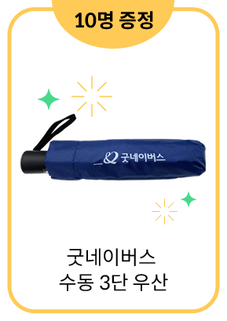
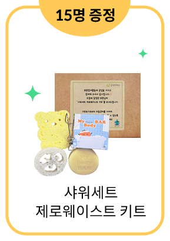
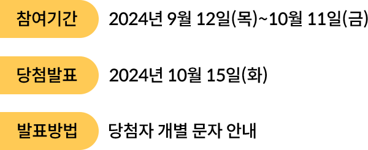

회원참여활동 자립준비청년의 온전한 자립, 우리가 지켜요!
보호자가 없거나, 가정에서 양육하기 어려워
아동 양육시설, 공동생활 가정, 위탁가정 등에서
아동 양육시설, 공동생활 가정, 위탁가정 등에서
보호받다 퇴소한 아동을 ‘자립준비청년’ 이라고 불러요.
매년 2,000명이 넘는 아이들이
홀로서기를 시작하고 있는데요.
사회적 관심이 높아지면서
다양한 지원 정책들이 마련되고 있지만,
홀로서기를 시작하고 있는데요.
사회적 관심이 높아지면서
다양한 지원 정책들이 마련되고 있지만,
온전한 자립의 기반이 되는 심리‧정서적 지원은
다른 지원들에 비해 후순위로 밀리고 있어요!
경증 이상 우울
자립 과정에서 마주하는 심리‧정서적 어려움은
세상과의 단절과 고립으로 이어지기 쉬워요.
48.8%
자립준비청년 우울 위험군
*출처 : 2022년 시설퇴소청년 생활실태조사 보고서 (보건복지부)50%
자립준비청년 자살생각 경험
*출처 : 2020년 보호종료아동 자립실태 및 욕구조사 (보건복지부)
자립준비청년들이 온전하고
건강한 자립을 할 수 있도록
건강한 자립을 할 수 있도록
균형적이고 종합적인
다양한 지원들이 필요해요!
자립준비청년의 온전한 자립,
우리가 지켜요!
다양한 지원사업들을 선물하여 자립 에너지를 가득 채워주세요♥
선물을 클릭해 주세요
자립 에너지 충전 완료!
자립준비청년의 온전한 자립을
지켜주셔서 감사합니다.
자립준비청년의 온전한 자립을 지켜주신 후원회원님께
추첨을 통해 선물을 드려요!



굿네이버스는 자립준비청년들의
온전한 자립을 위한 아동 발달단계별
맞춤형 자립지원 서비스를 제공하고 있습니다.
자립준비청년의 정책 개선을 위해
서명에 참여해 주세요!